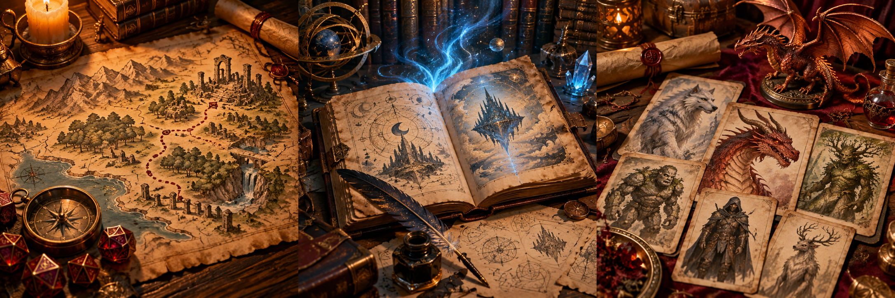

LA BIBLIOTECA DEL AVENTURERO
Tu próxima historia
empieza aquí.
Aventuras y compendios para llevar a tu mesa. Explora cada publicación y abre su demo para conocerla por dentro.

Consulta el estado de cada publicación. Los proyectos en desarrollo no están disponibles para compra.
ANTES DE ABRIR LA PRÓXIMA AVENTURA
Formatos, compras y envíos.
Elige cómo quieres llevar la aventura a tu mesa. Aquí te explico qué incluye cada formato y cómo hacer tu pedido.
01 · Elige tu formato
¿Qué incluye el PDF?
La edición digital de la publicación, para leer y consultar mientras preparas o diriges tus partidas.
Puedes abrirla en tu ordenador o tableta y tener el documento de la aventura a mano durante la sesión.
¿Qué son los materiales para VTT?
VTT significa «mesa virtual»: una herramienta para jugar a rol online, mostrar mapas y mover fichas.
El paquete reúne los recursos gráficos de la aventura:
- Mapas del director de juegoLa versión del GM para preparar y dirigir la aventura.
- Mapas de los jugadoresLa versión que puedes mostrar al grupo durante la partida.
- Tokens de monstruosFichas digitales para representar a las criaturas sobre el mapa.
¿Qué es el archivo JSON para Roll20?
Un archivo de importación para cargar la aventura en Roll20 mediante un script.
Al importarlo, se incorpora el contenido preparado: la aventura, las notas, los monstruos y los demás elementos incluidos en esa publicación. Así reduces el trabajo de introducirlos manualmente.
¿Qué incluye la edición física?
Recibirás un ejemplar impreso. Los archivos digitales que lo acompañan dependen del paquete seleccionado.
Libro + PDF
Incluye el ejemplar impreso y la edición digital.
Libro + PDF + VTT + JSON
Añade los recursos para mesa virtual y el archivo de importación.
Revisa las opciones disponibles y el precio de esa publicación antes de enviar tu solicitud por WhatsApp.
02 · Tu pedido, paso a paso
¿Cómo puedo comprar?
Elige tu aventura en la web y continúa el pedido por WhatsApp.
- Elige tu publicación y paquete.Selecciona la opción de compra que quieras.
- Calcula el envío si compras un libro físico.Indica la cantidad y el código postal, comprueba la localidad y calcula el envío. Si aparece «A consultar», te confirmaré el importe por WhatsApp.
- Envía el mensaje preparado.Pulsa continuar por WhatsApp y envía los datos de tu pedido.
- Confirma el pedido y recibe las instrucciones de pago.Por ese canal recibirás la confirmación del importe final y la disponibilidad, junto con el enlace o QR para pagar por PayPal.
- Recibe tu pedido.Una vez comprobado el pago, prepararé la entrega digital o el envío del libro, según tu paquete, y te informaré por WhatsApp.
Antes de pagar: confirma el importe total y los plazos de entrega. No necesitas realizar ningún pago directamente desde esta web.
¿Cuánto cuestan los gastos de envío?
Contenido digital
Sin gastos de envío postal. El precio corresponde al paquete digital que selecciones.
Libros físicos
El envío se añade al precio del libro. Puedes calcularlo al pulsar «Comprar», indicando cantidad y destino.
La calculadora utiliza el peso de los ejemplares, el embalaje, las medidas y la zona de destino para estimar los gastos de envío.
Cuando se puede calcular, el importe mostrado como «Envío» ya incluye el embalaje: no se añade una segunda vez al total.
¿Cuándo recibiré mi pedido y cómo hago el seguimiento?
Los plazos se acordarán por WhatsApp antes del pago, tanto para libros como para archivos digitales.
- Preparación y envío de libros. Te confirmaré los plazos previstos para preparar y enviar tu pedido.
- Entrega digital. Acordaremos el medio y el plazo de entrega de los archivos incluidos en tu paquete.
- Estado y seguimiento. Te informaré por WhatsApp y te facilitaré el seguimiento del envío cuando esté disponible.